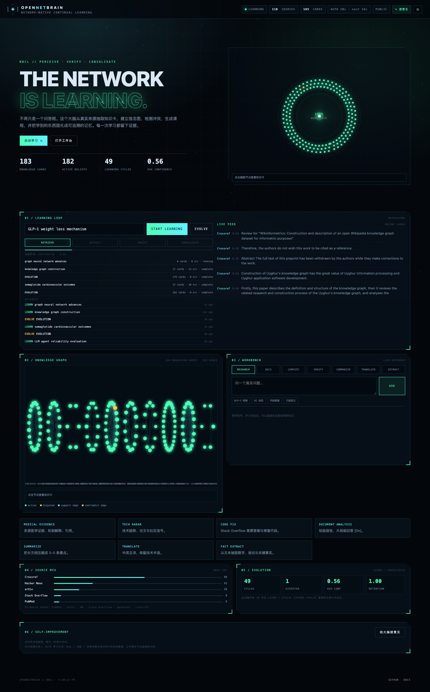

NBCL // PERCEIVE · VERIFY · CONSOLIDATE
THE NETWORK
IS LEARNING.
OpenNetBrain 是一个持续学习的网络大脑：从真实来源抽取知识卡，建立信念图，检测冲突，生成课程，并把学到的东西固化成可追溯的记忆。它每 20 秒自动在“学习”和“进化”之间切换。

RETRIEVEEXTRACTVERIFYCONSOLIDATEEVOLVE
LEARN
从 PubMed / arXiv / HN / Stack Overflow / OpenAlex / Crossref 抽取知识卡，带来源与置信度。
REVISE
信念图保留支持/冲突/争议关系；新证据不删除旧卡，而是标记与审计。
CONSOLIDATE
去重、重建图、更新边；自动循环每 20 秒执行一次进化。
ANSWER
研究、文档、计算、核查、摘要、翻译、事实抽取——都带来源或可追溯轨迹。